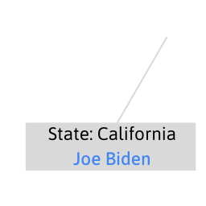

US Elections 2020
Analysis
232
 306
306
2020 Results
The 2020 United States presidential election was the 59th quadrennial presidential election, held on Tuesday, November 3, 2020. The Democratic ticket of former vice president Joe Biden and the junior U.S. senator from California Kamala Harris defeated the incumbent Republican president Donald Trump and incumbent vice president Mike Pence. The election took place against the backdrop of the global COVID-19 pandemic and related recession.

US States - Voting Comparison
Hover to see more details.
US County - Voting Comparison
US County Breakdown - Interactive
Hover to see more details.